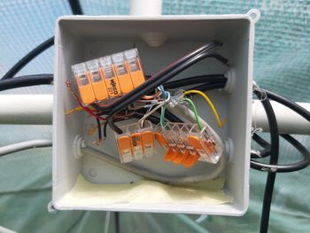
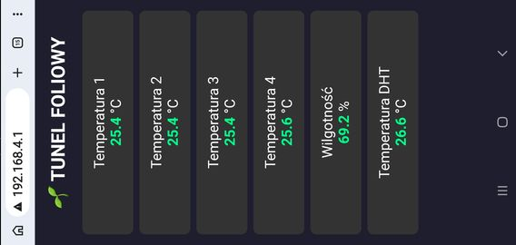
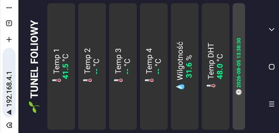
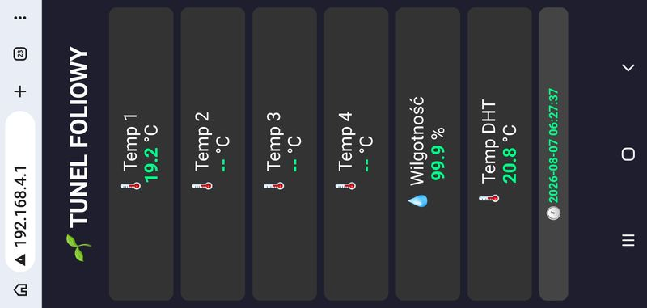
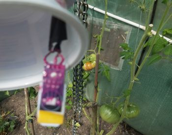
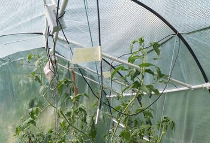
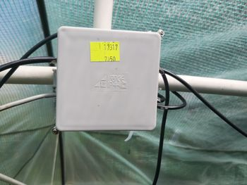

1. Z pomieszczenia do ogrodu
Mikroszklarnia 2.0 nie miała kończyć się na pomieszczeniu. Potrzebowaliśmy miejsca na kolejne eksperymenty — tym razem na zewnątrz. Tak powstał Tunel Foliowy 2026.
Kiedy prognozy zaczęły zapowiadać ekstremalne upały, nie było czasu na długie przygotowania. Chcieliśmy sprawdzić, jakie warunki rzeczywiście panują w tunelu, zamiast opierać się wyłącznie na prognozie pogody.
2. Plan był prosty
ESP8266 został w pomieszczeniu, a do tunelu prowadziło 30 metrów skrętki UTP. DHT22 mierzył temperaturę i wilgotność względną powietrza. Trzy czujniki DS18B20 miały mierzyć temperaturę na różnych poziomach.
Do tego pomiar referencyjny. Całość miała pokazać nie tylko, jak gorąco jest w tunelu, ale również czy temperatura różni się w zależności od wysokości.

3. W ogrodzie nie wszystko zadziałało
Na początku wszystko działało. Po przeniesieniu instalacji do ogrodu — już nie całkiem.
Pomiar referencyjny działał. DHT22 odczytywał dane. Przy DS18B20 pojawiły się kreski zamiast temperatury. Trzy czujniki, jedna magistrala i 30 metrów przewodu. Plan pomiarów temperatury na różnych poziomach nie został zrealizowany tak, jak zakładaliśmy.

Instalacja została na miejscu. Nie udało się ustalić przyczyny problemu na tyle, żeby przywrócić wszystkie odczyty. Tym razem zaakceptowałem ograniczenia układu. Chciałem poznać warunki panujące w tunelu — i część tej wiedzy udało się zdobyć.
4. Prognoza: 34°C. W tunelu: nawet 48°C
Prognoza zapowiadała temperaturę około 34°C. W tunelu zanotowałem nawet 48°C. Rano wilgotność względna regularnie dochodziła do 99,9%.
To skrajne warunki dla pomidorów. Wysoka temperatura może powodować stres cieplny, a długotrwała wilgotność bliska nasyceniu sprzyja utrzymywaniu się wilgoci na powierzchni roślin i zwiększa ryzyko niektórych chorób.
Nie mamy kompletnego zapisu wszystkich pomiarów. Zostały zrzuty ekranu z telefonu, z widoczną datą, godziną, temperaturą i wilgotnością. Nie pozwalają odtworzyć całego przebiegu warunków, ale dokumentują to, co udało się zaobserwować.


5. Eksperyment to również przewody i puszka
Za pomiarami stoją czujniki, połączenia, przewody i zabezpieczenie elektroniki. Puszka IP64 została dodatkowo zabezpieczona klejem na gorąco. Chciałem, żeby instalacja przetrwała pracę na zewnątrz.
Samo zabezpieczenie obudowy nie rozwiązuje jednak wszystkich problemów związanych z długimi przewodami, magistralą czujników i pracą w zmiennych warunkach. Tego również trzeba się nauczyć w praktyce.



Co nam to pokazało?
Nie udało się zebrać kompletu danych ani zrealizować wszystkich założeń technicznych. Udało się jednak zaobserwować warunki panujące w tunelu i przekonać się, że przeniesienie instalacji z pomieszczenia do ogrodu stawia przed nią nowe wymagania.
Czasem eksperyment kończy się nie gotowym rozwiązaniem, ale lepszym rozumieniem problemu. I od tego można zacząć następny.
A następny krok?
Tunel nie zamyka tematu pomiarów. To początek dalszych prób z czujnikami, instalacją i zbieraniem danych.
W kolejnych etapach sprawdzamy rozwiązania, które pozwolą budować węzły pomiarowe i zbierać dane bez prowadzenia długich przewodów do każdego czujnika.
Bez pajęczyny przewodów. LevelUp!